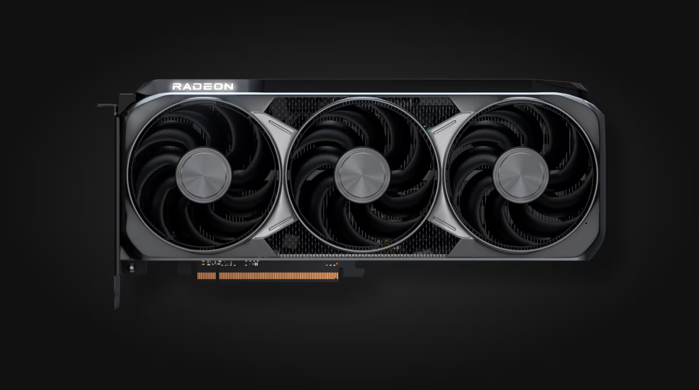
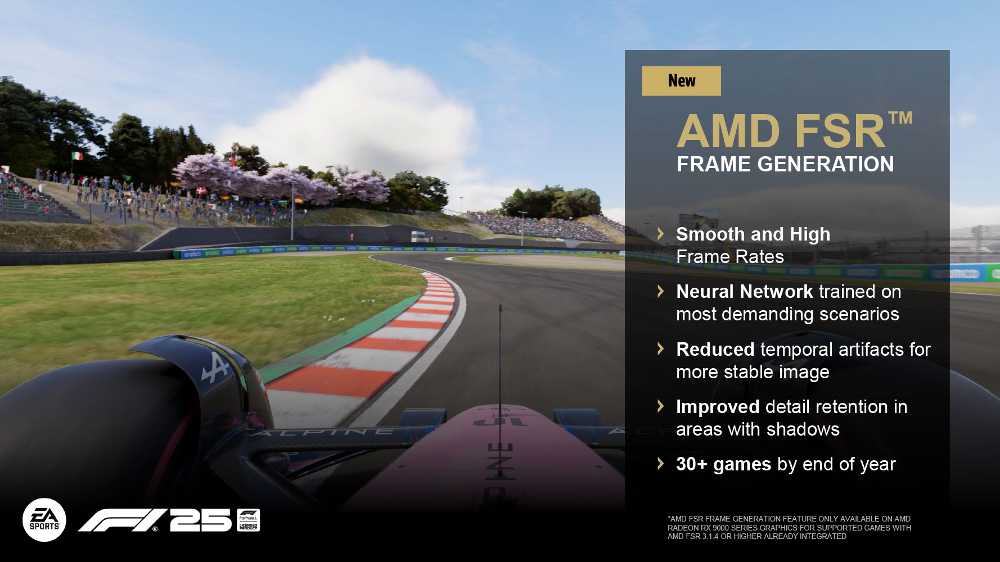

AMD Radeon RX 9070 XT
— это мощная субфлагманская видеокарта разработанная на базе новейшей графической архитектуры RDNA 4. Модель нацелена на верхний сегмент среднего класса и создана как бескомпромиссное решение для максимальных настроек графики в разрешении 1440p (2K), а также для уверенного гейминга в 4K. Главной гордостью этого поколения стало кардинальное улучшение работы с трассировкой лучей и интеграция полноценного аппаратного искусственного интеллекта.


Генерация кадров (FSR Frame generation)
— это технология интерполяции кадров, которая искусственно увеличивает частоту кадров (FPS) в играх. Генерация кадров берет два уже отрендеренных кадра, анализирует движение пикселей и векторные данные и «дорисовывает» между ними промежуточный виртуальный кадр. Это визуально удваивает или даже утраивает плавность игрового процесса.
FSR 4.1 — новое поколение апскейлинга
В июне 2026 года AMD выпустила FSR 4.1 — обновлённую версию апскейлинга на основе машинного обучения. Она даёт более чёткую картинку в движении, лучшую временную стабильность и заметно ускоряет режим Ultra Performance по сравнению с предыдущей версией FSR 4.0.
- Улучшенная чёткость картинки в движении
- Более стабильное изображение без «призраков» (ghosting)
- Ускоренный режим Ultra Performance
- Поддержка более 300 игр
История развития технологии FSR:
- FSR 1 — базовый апскейлинг
- FSR 2 — временное сглаживание (TAA-based)
- FSR 3 — добавлена генерация кадров
- FSR 4 — апскейлинг на основе ИИ, эксклюзив для RDNA 4
- FSR 4.1 — улучшенное качество и поддержка RDNA 3